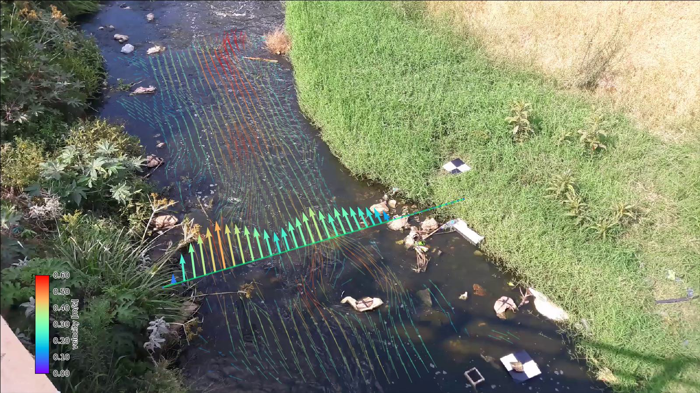
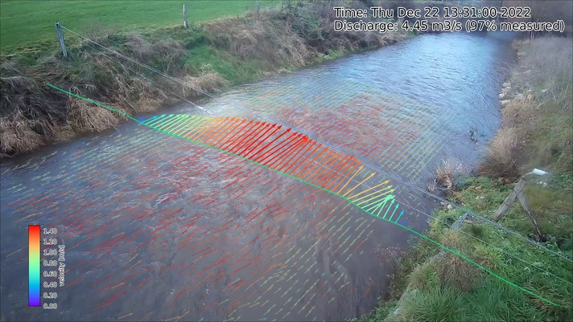

Plotting#
pyorc offers a number of convenient plotting functions that allow you to summarize the output data into figures.
The plotting functionality is built such, that it can combine a view of a frame, with a view on your surface velocity
estimates, and transect velocities into one figure that displays all the steps of your processing in one single view.
The views can be made either in a camera perspective, providing an augmented reality view, a local perspective,
meaning the perspective after orthorectification, or a geographical perspectives, plotting on a geographical map if
the coordinate reference system is known. There may be use cases for all three perspectives. A full example of how to
establish a plot from our example dataset is shown below, with more information below that.
To generate a plot through a recipe, you may include a plot section. In this section you can configure as
many plots as you like in subsections. In the example, we only make one, called plot_quiver.
Under the plot_quiver examples, we specify 3 subsections frames, velocimetry and
transect to plot the respective components. Besides these subsections, you can specify a few other things:
mode: select in what projection mode the plot should be made. This can becamera,localorgeographicalas explained above. Try it out to see what this gives you.reducer: because plotting is only 2-dimensional, somehow you have to reduce the velocimetry results over the time dimension so that you only have the spatial dimensions left. This is done with a so-calledreduceroperation. The available ones aremeanandmedian.write_pars: here you pass several parameters that may be used whilst writing to file. Please note that the available parameters are described in thematplotlibdocumentation, more specifically this page. Only the parameterfnamecannot be supplied as this is the filename for the output. This filename will be constructed by pyorc and has the naming convention<figure-name>.jpg.
...
...
plot:
plot_quiver:
frames:
velocimetry:
alpha: 0.4
cmap: rainbow
vmax: 0.6
transect:
transect_1:
cmap: rainbow
add_colorbar: True
# width: 2 # uncommenting woul make the arrows 2x thicker than default
# scale: 0.5 # uncommenting would make the arrows twice as long as default
vmin: 0
vmax: 0.6
mode: camera
reducer: mean
write_pars:
dpi: 100
bbox_inches: tight
To generate a plot with all three components, you therefore need access to at minimum one frame from a
pyorc.Frames object, a pyorc.Velocimetry object that is somehow reduced over time (e.g. a mean or median)
and a pyorc.Transect object that has an effective velocity, perpendicular on the stream direction. Let’s
do a full example, starting with an already processed video. Below we re-open the video, also open the
velocimetry results, retrieve a transect from it, and plot everything together in one figure. The
specifics are explained after that.
import xarray as xr
import pandas as pd
import pyorc
from matplotlib.colors import Normalize
ds = xr.open_dataset("examples/ngwerere/ngwerere_masked.nc")
# also open the original video file, only one frame needed
video_file = "examples/ngwerere/ngwerere_20191103.mp4"
video = pyorc.Video(video_file, start_frame=0, end_frame=1)
# borrow the camera config from the velocimetry results
video.camera_config = ds.velocimetry.camera_config
# get the frame as rgb
da_rgb = video.get_frames(method="rgb")
# read a cross section
cross_section = pd.read_csv("examples/ngwerere/ngwerere_cross_section.csv")
x = cross_section["x"]
y = cross_section["y"]
z = cross_section["z"]
# get data over the cross section
ds_points = ds.velocimetry.get_transect(x, y, z, crs=32735, rolling=4)
# get vertically integrated velocities
ds_points_q = ds_points.transect.get_q(fill_method="log_interp")
# plot the rgb frame first. We use the "camera" mode to plot the camera perspective.
norm = Normalize(vmin=0., vmax=0.6, clip=False)
# plot the first frame and return the mappable
p = da_rgb[0].frames.plot(mode="camera")
# extract mean velocity and plot in camera projection
ds.mean(dim="time", keep_attrs=True).velocimetry.plot(
ax=p.axes, # use the axes already created with the first mappable
mode="camera", # show camera perspective
cmap="rainbow", # choose a colormap
alpha=0.3, # transparency (smaller is more transparent)
norm=norm, # color scale
)
# plot velocimetry point results in camera projection
ds_points_q.isel(quantile=2).transect.plot(
ax=p.axes, # refer to the axes already created
mode="camera", # show camera perspective
cmap="rainbow", # choose a colormap
norm=norm, # color scale
add_colorbar=True # as final touch, add a colorbar
)
The resulting figure is shown below. Let’s dive a little more into the details of the three different components.
Frames#
To plot a frame you only have to specify frames: without any further argument. Automatically, the first
frame in the video will then be added to the figure.
The steps to get a frame plotted on your figure canvas, are the following:
get the frames from the video with
get_frames.If you want to plot in
localorgeographicalmode, then callframes.projecton yourFramesobject and move on with the result of this.select a (one!) frame
call
frames.ploton the result with your desired projection mode defined in the parametermode. By defaultmode="local". As you may note
Note that in the example, we do the frame selection (with da_rgb[0]) and plotting in one line of code as
follows:
p = da_rgb[0].frames.plot(mode="camera")
Velocimetry#
Getting your 2-dimensional velocimetry results in the figure can be done in several ways with for each method
also other parameters that may be supplied. Below we describe briefly what the options are and we refer to the
respective web pages where the input parameters may be found (x and y being supplied by pyorc so you should not
supply these). For all methods, you can supply the parameters vmin and vmax, which indicate the minimum and
maximum value you wish to show on a color scale. Furthermore, you may add an option add_colorbar: True to establish
a colorbar in the lower left corner. This colorbar will be bounded by the values supplied with vmin and vmax.
If you do not supply vmin and vmax, then a standard colorbar with limits of 0 and 3 with pretty breaks is used.
Note that any parameter added is not mandatory! If you leave the parameters out, then default values will be used
instead.
quiver (default): “quivers” are arrows pointing into the vector direction, with the length and (possibly) color representing the scalar value of the velocity. See this page. Especially the
scaleparameter is a little counter- intuitive. A larger value results in smaller arrows!!pcolormesh: this is a gridded colored mesh that defines the scalar values only. See this page.
scatter: similar to pcolormesh, but then the velocities are represented by dots instead of grid cells. See this page.
streamplot: this only works on local mode and shows lines how particles would move over the surface. See this page.
Specific default values for quiver plots include the width and scale parameters. These are set such that
they always look pretty on all plot modes. A width of 1 results in the default width. Smaller (larger) than 1
in thinner (thicker) quivers. A scale of 0.5 (2.0) means the quiver length will be twice as large (small)
as default.
Within the recipe, under the selected plot (in the example plot_quiver) and the velocimetry subsection
you can define the plot method, and below that define the parameters. Please read the referred pages to see what
options there are.
The plot methods are available under a subclass pyorc.Velocimetry.plot. Before applying them, you must first
reduce any time variable results over time, for instance with:
# assume that processed and masked results are in piv
piv_mean = piv.mean(dim="time", keep_attrs=True)
Note
The keep_attrs=True flag is quite important here as we may need the attributes to reproject data from
the default x, y projection to the original camera perspective for instance.
After reducing, we can use a set of methods to make plots, in a very similar manner as used for plotting
frames. As shown in the example, you can smartly combine plots from a frame, with plots of your velocimetry results and by
doing so create beautiful augmented reality views, or geospatial views. The different plotting method all use an
underlying matplotlib.pyplot function and are also named accordingly. Hence they can receive keyword arguments
specific to these underlying functions. In addition, the additional important keywords described above can be
supplied as follows:
add_colorbar=True: this flag will add a default colorbar to the axesmode: this flag can be set tolocal(default),geographical(for plots in a geospatial view) andcamerafor augmented reality in the camera’s original perspective.
Each plotting method always returns the mappable so that you can make your own colorbars, and refer to its parent axes and in turn the axes parent figure.
The different plotting methods are summarised below.
Plot function |
Description |
|
|---|---|---|
|
computes scalar velocities and plots these as a gridded mesh |
|
|
computes scalar velocities and plots as colored dots |
|
|
draws a streamplot through the x and y-directional velocities. Only works with
|
|
|
draws a quiver plot using the x and y-directional velocities. If
|
|
Transect#
Plotting a transect is very similar to plotting of 2-dimensional velocimetry. Only the methods quiver and
scatter are available, as streamplots and meshes do not apply to 1-dimensional datasets.
Another nice example of a augmented reality view over the Geul river in The Netherlands is shown below.
